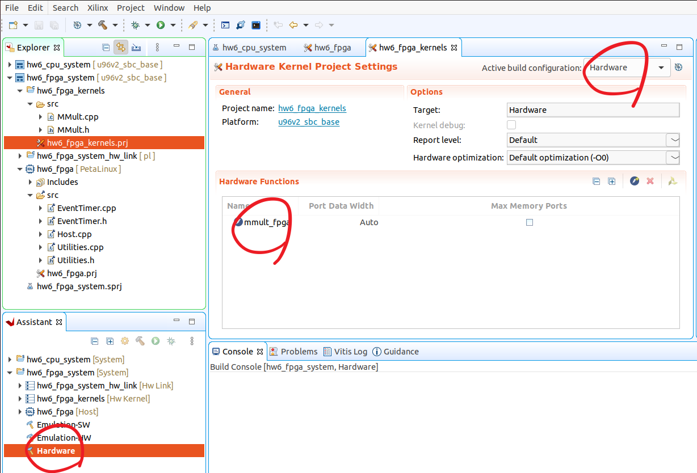

Following the previous HW, we will create Vitis project using Vitis IDE.
Note that Makefiles are automatically generated when we build the project in GUI mode,
and you are welcome to use Makefiles later in the project.
In fact,
many of Vitis tutorials on the web are using Makefile, which we
highly recommend you to browse around while you are doing this lab.
In this HW, we will analyze how the processor
core communicates with an accelerator. We tell you some
specific things to experiment with, but you should do some reading from:
Note that we are running on Linux. If you want to gain a deeper understanding of what’s going on under the hood and how the zocl driver supplied by Xilinx Runtime (XRT)
manages DMA, refer to the following resources:
Like we did in HW5, sourcesourceMe.sh first. Note that
you need to adjust the sourceMe.sh if you are running
on your local machine.
We will create the CPU version’s project.
Launch vitis and create application project as we did before.
All the steps are identical, but when selecting Templates,
select SW Development templates\(\rightarrow\)Empty Applications (C++).
Import following files to src:
common/*
apps/mmult/cpu/Host.cpp
apps/mmult/fpga/hls/MMult.h
Right click the project and select C/C++ Build Settings.
Click ARM v8 Linux g++ linker\(\rightarrow\)Libraries.
Add xilinxopencl as shown below.
Right click the project and select C/C++ Build Settings.
Click ARM v8 Linux g++ compiler\(\rightarrow\)Optimization.
Set to O3.
Build the project. You will see .elf created in Debug folder.
Next, we will create FPGA version’s project.
Right click the
white space in the Project Explorer view, then New\(\rightarrow\)Application Project. Set the name of the project as
hw6_fpga. When selecting Templates,
select SW acceleration templates\(\rightarrow\)Empty Application.
For the kernel src, import following files:
apps/mmult/fpga/hls/MMult.h
apps/mmult/fpga/hls/MMult.cpp
For the host src, import following files:
common/*
apps/mmult/fpga/Host.cpp
apps/mmult/fpga/hls/MMult.h
In kernel project, add mmult_fpga to the Hardware Functions.
Select Hardware in Active build configuration on the
upper right corner. Your project should look something like below.

Fig. 22 Add hardware function and set the build configuration to Hardware#
In the Assistant view on the lower left corner, you will see
Hardware is bolded as shown in Fig. 22.
Right click it and build the project. It will take about 30 minutes.
If you are run out of disk space, we recommend you to remove sd card image
generated in HW5.
Like we did in HW5, copy the related files in package/sd_card directory
to Ultra96’s /mnt/sd-mmcblk0p1/ and type reboot.
Enable the ethernet connection using ifconfig.
Next, scp the .elf file generated from CPU version.